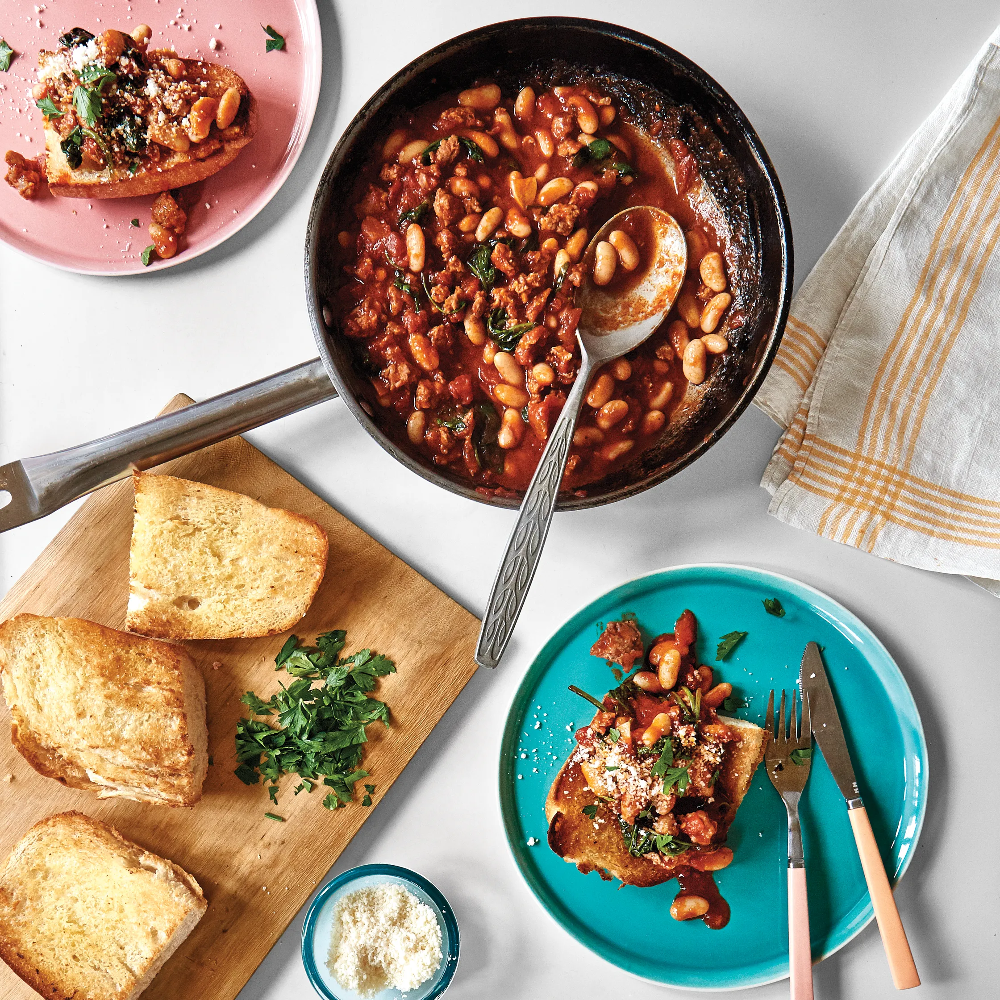

Weeknight Beans on Toast

Description
An easy and filling meal, that hits the spot on a weeknight or weekend.
Below is the list of ingredients and instructions on how to make Beans on Toast.
Ingredients
Main Ingredients
- 2 Tbsp. extra-virgin olive oil
- 1 lb. sweet or hot Italian sausage, casings removed
- 5 garlic cloves, 3 thinly sliced, 2 finely grated
- ½ tsp. dried oregano
- ¼ tsp. crushed red pepper flakes (optional)
- 1 28-oz. can crushed tomatoes
- 3 tsp. kosher salt, divided, plus more
- 1 5-oz. package baby spinach, coarsely chopped
- 2 15.5-oz. cans white beans, rinsed
- 4 Tbsp. unsalted butter
- 1 12" crusty Italian sub roll, cut in half crosswise, split lengthwise, or 2 ciabatta rolls, split lengthwise
- 1 oz. Parmesan or Pecorino, finely grated
- Chopped parsley (for serving; optional)
Instructions
- Heat oil in a large Dutch oven or high-sided skillet over medium-high. Add sausage and press down on it with a heatproof rubber spatula to flatten slightly. Cook, undisturbed, until browned underneath, about 4 minutes. Turn sausage over and cook, undisturbed, until browned on the other side, about 3 minutes. Break up sausage into bite-size pieces with spatula. Add sliced garlic, oregano, and red pepper flakes (if using) and cook, stirring, until garlic is beginning to get golden around the edges, about 1 minute. Carefully add tomatoes (beware of splatter!), then 2½ tsp. salt and 1 cup water. Bring sauce to a simmer and cook, stirring occasionally, until slightly reduced, 10–12 minutes. Mix in spinach and cook until wilted, about 2 minutes. Add beans and cook until warmed through, about 3 minutes. Taste ragù and season with more salt if needed.
- Meanwhile, heat broiler. Melt butter in a small saucepan over medium heat. Mix in grated garlic and remaining ½ tsp. salt and cook until fragrant and sizzling but garlic is not yet browned, about 30 seconds; remove from heat.
- Arrange bread, cut side down, on a foil-lined baking sheet and broil until golden brown, about 1 minute. Remove from broiler and turn bread over. Brush untoasted sides of bread with garlic butter and broil until evenly golden brown on top, about 1 minute (keep watch; it will go fast).
- Divide toast among plates. Ladle a generous amount of ragù over and top with Parmesan and parsley.